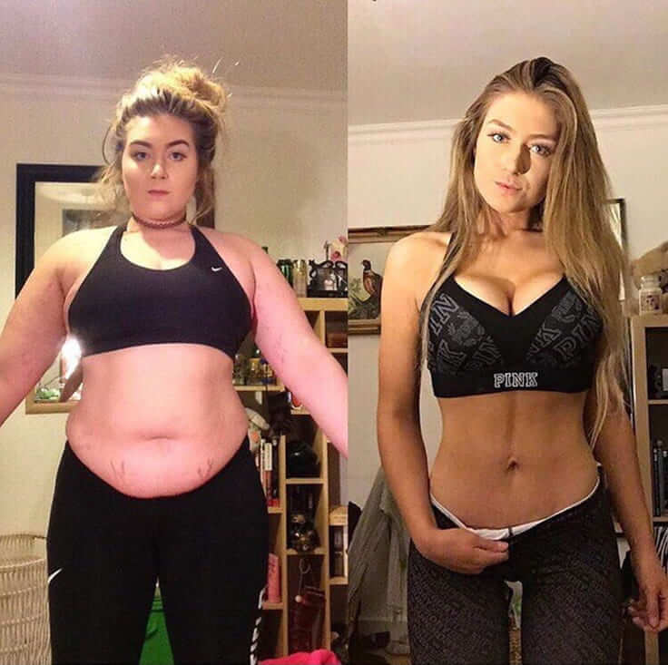

„Vedd el a legjobbat, amit az élet kínál” – ez a mottóm. Számomra a legjobb az ízletes és egészségtelen étel. Enélkül nem érzem magam normálisnak. A rokonaim mindig azzal ugrattak, hogy pufók lány vagyok, mert ez sosem zavart. Ez azért van, mert csak akkor hagytam, hogy ez zavarjon, amikor egyedül voltam. Egy gyenge és ijedt kiskutya rejtőzött a sok zsír alatt. Most mindez már a múlté. Fél évembe telt, míg elértem, de lefogytam 50 kg-t, és szeretném megosztani mindenkivel, hogyan lehet könnyen lefogyni.
Az én sztorim nem egy tipikus történet. Szülés után nem híztam, de hormonális egyensúlyhiányom volt, és sok stressz ért egy nehéz szakítás után. Amióta az eszemet tudom túlsúlyos vagyok. A családomban hasonlóképp mindenki túlsúlyos. Mintha csak istenítenénk az ételt. Kamasz koromban nem éreztem így, és próbáltam tenni valamit a súlyomért. Bármit próbáltam, a zsír folyamatosan megjelent az egész testemen.
A narancsbőr vastag rétegekben alakult ki a combomon, az oldalamon, a derekamon, a karomon, a nyakamon és a fenekemen. És mindez azért történt, mert nem tudtam rákényszeríteni magam a diétára. Az állandó étel utáni vágy arra késztetett, hogy zsíros és egészségtelen ételeket fogyasszak.
Amikor befejeztem a középiskolát, egy másik városba költöztem, hogy megkezdjem az egyetemet. Azt hittem, hogy itt az alkalom, hogy megváltoztassam magam, de kiderült, hogy a helyzet nem befolyásolható. Gyermekkoromban sem rajongtam a sportért vagy a testmozgásért. Sosem voltam képes visszatartani magam attól, hogy ne egyem azt az ételt, amit szeretek. Az esti gyorséttermi kirándulások olyanok lettek számomra, akár egy rituálé.

A korábbiakkal ellentétben most már megértem, hogy mindig annyira stresszes voltam. Mindig arról álmodtam, hogy megtalálom az igaz szerelmet. Egy partner, aki akkor is szerethet, ha csúnya vagy? Minden barátom boldogan élt valamilyen párkapcsolatban. Gyakran hangulatos kis játékpartikat szerveztünk, csevegtünk, bort ittunk és ízletes ételeket ettünk. Láttam, ahogy a vékony barátnőim felfalhatják hatalmas gyorséttermi adagjaikat, és nem híznak. Csak ültem ott fogcsikorgatva és salátát ettem. Tudtam, hogy ha túl sokat eszek, akkor a farmerom kinyílik, és a szoba megtelik kövér párnáimmal . Aztán amikor hazaértem, csendben megettem mindent, amit akartam, miközben senki sem nézett.
Egyedül voltam otthon, és néztem egy sorozatot, megettem egy pizzát más gyorsétellel együtt, és hangosan nevettem. Nem azért sírtam, mert a műsor szomorú volt, hanem azért, mert sajnáltam és gyűlöltem magam. MIÉRT NEM TUDTAM FOGYNI? Az volt az oka, hogy nem diétáztam, és túl sokat zabáltam? Mit tegyek, hogy kézben tartsam a dolgokat, ha annyira igyekszem, és soha semmi nem sikerül ?
Új életet kezdek, miután minden reggel megadom magam az esti vágyakozásnak.
Zabkását ettem, és elmentem egy csoportos kardióedzésre. A kemény rész az volt, hogy azt néztem, milyen tökéletesen néz ki a többi lány. Nagyon könnyű volt számukra minden. Annyi erőfeszítést beleöltem, és nem láttam eredményt . Elegem van az egészből. Nem bírtam újra és újra átélni a kudarcot . Minden megváltozott, amikor új szobatársam lett, aki tökéletes volt. Annyira fitt volt, és a teste egyszerűen TÖKÉLETESnek tűnt. Vékony karja és lába volt, keskeny dereka, buborékfeneke, fényes haja és finom bőre. Ő ugyanannyit evett, mint én, és néha úgy tűnt, hogy még többet is.
Annyira féltékeny lettem, hogy valaki más is ugyanúgy eszik, mint én, és nem hízik. Mi van velem?? Sok időt töltöttem sírással a zuhany alatt. El sem tudom képzelni, hogy milyen csúnyán néztem ki, kövéren és törölközőbe burkolózva sírtam a szoba sarkában, amikor a szobatársam hirtelen bejött, és azt gondolta, hogy a szoba üres. Meglátott és megpróbált megnyugtatni. Nem tudtam visszafogni magam, ezért elmondtam neki az egészet. Aztán elmesélte a történetét...
Kiderült, hogy különböző fogyókúrákon kellett átesnie, hogy eljusson oda, ahol van. Az edzőteremben kimozogta a lelkét, de nem látott eredményt. Teljesen kétségbeesett, amikor a sors egy egészen lenyűgöző egyénnel sodorta össze. Ő elmesélte neki a fogyás titkát. Azt mondta neki, hogy a modellek, színészek, énekesek, fitneszedzők és mindenki, akinek olyan teste van, hogy érdemes rá féltékenynek lenni, ennek a készítménynek a segítségével fogyott le: .
Ez nem valamiféle marketinges rendszer. Egyszerűen csak egy szuper hatékony termék, amely a testet ketózisba hozza. Korábban hallottam a keto-diétáról, de lehetetlen volt alaposan betartani. Ez az ital természetes tápanyagokat tartalmaz, amelyekre a szervezetnek szüksége van a testzsír elégetéséhez és a ketózis aktiválásához alkalmanként 40 percig. Nem napokba telik, mire kifejti a hatását, és nem kell különleges diétát folytatni.
Elkészítette nekem ezt a csodálatos italt. Korábban is hallottam erről a különleges, MCT olajat és kókuszt tartalmazó italról, melyet a keto diétához isznak, de már a kipróbálás gondolatától is hányingerem lett. De meglepetésemre a nagyon ízlett.
Nehéz volt elhinni, de már nem volt más lehetőségem. Készen álltam, hogy bármennyit fizetek, csak megkapjam ezt az italt. Örültem, amikor rájöttem, hogy a könnyedén megvásárolható a gyártó hivatalos weboldaláról.
Végre elkezdtem hinni benne, hogy lefogyhatok, aztán meg is történt! Ennek tetejébe pedig fogyókúráznom és edzenem sem kellett. Azt ettem, amit csak akartam, az étvágyam viszont megváltozott. Túl sokat akartam enni, de könnyedebben jóllaktam. Reggelente csak egy csésze -t ittam. Korábban mindig éhes voltam, most viszont az éhségem már nem befolyásolja az életbeli döntéseimet.
Azelőtt annyira lassú voltam, most pedig van egy csomó energiám. Elkezdtem többet mozogni és kevesebbet enni. Ezen kívül folytattam a gyorsételek fogyasztását, de nem olyan nagy mennyiségben, mint korábban. Egy hónap telt el, és észrevettem, hogy a ruháim kezdenek lazán lógni rajtam. Egy nap majdnem elvesztettem a nadrágomat munkába menet, haha. De persze örültem, hogy így történt. Végre kidobhatom minden régi, lógó ruhámat, és valami divatosabbat és nőiesebbet hordhatok.
Fél év telt el azóta, hogy elkezdtem szedni a -t. Magam sem hiszem el, de 50 kg-ot fogytam! Továbbra is reggelente iszom ezt a finom matcha teát, és soha még csak nem is gondolok az edzésre. Végre kezdem élvezni a normál testsúlyom előnyeit. Minden egészségügyi problémám megszűnt, és újra egy gyönyörű szűk ruhával kényeztethetem magam! Már két helyet foglalok el a buszon és a tömegközlekedésben, és a srácok utánamfordulnak, hogy megnézzenek.
Amúgy megpróbáltam az összes hozzávalót külön-külön megvásárolni, és saját -t készíteni. Kiderült, hogy így sokkal drágább, és szörnyű íze volt. Egyetlen kortyot sem tudtam lenyelni belőle! Az eredeti annyira finom, hogy nem is esik jól más desszert. Persze a lényeg az, hogy valódi eredményt hozzon, és így azt eszem, amit csak akarok, és a leadott kilók nem jönnek vissza.
Higgyétek el, megéri megszabadulni a felesleges testzsírtól. Valójában vékonynak lenni fantasztikus. Ezzel: egyáltalán nem nehéz. Hölgyeim, hihettek a csodákban! Ha a testmozgás és a diéta nem segít, akkor elő a titkos fegyverrel.
Sok szerencsét mindenkinek, hogy végre elérje álmai testalkatát! Íme a link a hivatalos weboldalra, ahol megvásárolhatjátok az életeteket megváltoztató italt.